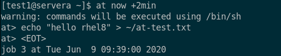

第二章 计划将来的任务
目标：
- 规划任务以便在将来自动执行。
章节：
- 计划延迟的用户作业
- 计划周期性用户作业
- 计划周期性系统作业
- 管理临时文件
第一节：计划延迟的用户作业
目标：
- 完成本节后，学生应该能设置一个在将来某个时刻运行一次的命令。
描述延迟的用户任务：
- 计划好运行的命令被称为任务或作业（task or job）。
- at软件包包含atd守护进程和一组命令（at、atq等）。
- 在默认的RHEL安装过程中，将自动安装并启用atd守护进程。
- root及普通用户可以使用 at 命令创建计划任务，atd 守护进程提供 a-z 共26个队列，按
字母排序，越后面的队列优先级越低。
计划延迟的用户任务：
- 使用 at <time_spec> 创建作业，at从标准输入中读取指令，直至 Ctrl+D 终止。
- $ at now +5min < <script_name>：从脚本导入指令至at中
- TIMESPEC非常灵活，可参考/usr/share/doc/at/timespec。
1. now +5min
2. teatime tomorrow（下午16:00）
3. noon +4 days
4. 5pm august 3 2021

查看和管理延迟的用户作业：
- 使用 atq 或 at -l 命令查看用户的待处理作业。


- 普通用户只能查看和控制自己的作业。
- root用户可以查看和管理所有作业。
- $ at -c <job_number>：查看作业的详细信息
删除作业：
- $ atrm <job_number>：删除计划作业
练习 P38：SCHEDULING A DEFERRED USER JOB
第二节：计划周期性用户作业
目标：
- 完成本节后，学生应该能利用用户的crontab文件来安排命令按计划重复运行。
描述周期性用户作业：
- 按计划重复运行的作业被称为周期性作业。
- crond守护进程管理周期性作业，由cronie软件包提供，默认安装并启动。
- crond守护进程读取多个配置文件，crontab命令编辑配置文件。
- 如果计划任务运行失败，crond会发送邮件给指定用户。

计划周期性用户作业：
- 如下所示：

* 注意：
1. crontab命令使用 -u 选项，以此来管理其他用户的作业。
2. 不推荐crontab命令来管理系统作业，而应使用下一节中介绍的方法。
描述用户作业格式：
- crontab -e 调用Vim进行计划任务的编辑，每行一个作业，支持空行和 # 注释行。
- crontab的字段格式：分钟、小时、日、月、星期几、命令（分时日月周）
- 其中日和星期是或的关系。
- 前五个字段全部使用相同的语法规则：
1. * ：始终
2. 数字：指定分钟数或小时数、日期或者工作日
3. x-y：范围，x 到 y（含）。
4. x,y：列表，列表也可以包含范围。
5. */x：x的时间间隔
周期性用户作业示例：
- 每年 2 月 2 日上午 9 点准点执行命令/usr/local/bin/yearly_backup。

- 七月每周五的上午 9 点和下午 4 点间，每五分钟向该作业的所有者发送包含单词Chime
的电子邮件。

- 每个工作日（周一到周五）上午 9 点执行mutt命令，从而将邮件消息Checking in发送给
收件人boss@example.com。

练习 P45：SCHEDULING RECURRING USER JOBS
第三节：计划周期性系统作业
目标：
- 完成本节后，学生应该能在系统crontab文件和目录中，设置命令重复运行的计划任务。
描述周期性系统作业：
- 系统范围的crontab文件与用户的crontab类似，唯一的不同是系统范围的crontab文件
的命令字段前面有一个额外用户字段。

- 周期性系统作业应始终在/etc/cron.d目录下创建自定义crontab文件。
- crontab系统中还包含需要每小时、每天、每周和每月运行的脚本目录。
- 这些目录中包含可执行的shell脚本（需添加可执行权限）。
- 存储目录如下所示：
/etc/cron.hourly/、/etc/cron.daily/、/etc/cron.weekly/、/etc/cron.monthly/
- /etc/cron.d/0hourly 文件调用 run-parts 命令运行/etc/cron.hourly/*脚本。

- /etc/anacrontab文件调用 run-parts 命令运行每日、每周和每月的作业。
- /etc/anacrontab确保重要的作业始终运行，不会因为系统在应执行作业时关闭或休眠而
意外跳过。
- 如果由于系统重启而导致某个每日运行的系统作业上次未按时执行，则在系统启动后就会执行
此作业。
- 但启动作业可能会有几分钟的延迟，参考/etc/anacrontab中 Delay in minutes 参数值。
systemd timer简介：
- 随着systemd的出现，RHEL 7开始启用了新的调度功能，即systemd timer unit（定时器单元）。
- systemd timer unit激活另一个unit，一般是与timer unit同名的service unit。
timer unit举例：
- 由sysstat软件包提供的sysstat-collect.timer每隔10分钟收集系统统计信息。
- 如下所示：/usr/lib/systemd/system/sysstat-collect.timer

- OnCalendar定义了时间间隔，表示方法很灵活。
- 如，2019-03-* 12:35,37,39:16 表示2019年3月每一天的12:35:16、12:37:16和12:39:16。
- 也可使用OnUnitActiveSec，如，OnUnitActiveSec=15min表示每隔15分钟激活。
* 注意：
1. 请不要修改 /usr/lib/systemd/system 中配置文件，应该拷贝到 /etc/systemd/system
中并修改，以防因为软件包的更新被覆盖。
2. 更改systemd配置后，使用 systemctl daemon-reload 让systemd重新加载配置。

3. 重新加载后，需要使用systemctl激活timer unit。

4. 常用man帮助手册：
$ man 5 crontab
$ man 8 anacron
$ man 5 anacrontab
$ man 7 systemd.time
$ man 5 systemd.timer
$ man 8 crond
练习 P51：SCHEDULING RECURRING SYSTEM JOBS
第四节：管理临时文件
目标：
- 完成本节后，学生应该能启用和禁用systemd timer并配置管理临时文件的timer。
管理临时文件：temporary file
- 有些应用（和用户）会使用 /tmp 目录来保存临时数据。
- 还有一些应用（和用户）则使用特定位置，如 /run 下特定易失性目录。
- 系统重新启动或断电时，易失性存储器的所有内容都会丢失。
- 为保持系统充分运行，有必要创建这些不存在的目录和文件，因为守护进程和脚本可能会依靠
它们的存在。
- RHEL 7及更高版本中包含了一个名为 systemd-tmpfiles 的新工具，它提供了一种结构化和
可配置的方法来管理临时目录和文件。
- 在systemd启动系统后，其中一个最先启动的service unit是 systemd-tmpfiles-setup。
- 该服务运行 systemd-tmpfiles --create --remove 命令。

- 此命令从以下目录读取配置文件：
/usr/lib/tmpfiles.d/*.conf
/run/tmpfiles.d/*.conf
/etc/tmpfiles.d/*.conf
- 系统会删除这些配置文件中标记要删除的文件和目录，并且会创建标记要创建（或修复权限）
的文件和目录，并使其拥有正确的权限（如有必要）。
使用systemd timer清理临时文件：
- 为确保长期运行的系统不会用陈旧数据填满磁盘，名为 systemd-tmpfiles-clean.timer 的
systemd timer unit会定期触发 systemd-tmpfiles-clean.service 来执行systemd-tmpfiles
--clean命令。


* 注意：
1. OnBootSec=15min：
systemd-tmpfiles-clean.service服务单元将在系统启动15分钟后被触发
2. OnUnitActiveSec=1d：
在上一次激活服务单元24小时后再次触发systemd-tmpfiles-clean.service服务单元
的时间

3. 根据不同要求，可以更改systemd-tmpfiles-clean.timer配置文件中的参数。
4. 如，OnUnitActiveSec的值为 30min 时，将在上一次激活服务单元 30 分钟后触发
systemd-tmpfiles-clean.service服务单元。
5. 因此，在更改生效后将每 30 分钟触发一次systemd-tmpfiles-clean.service。
6. $ sudo systemctl daemon-reload
# 更改systemd-tmpfiles-clean.timer配置文件后，重新加载配置信息。
7. $ sudo systemctl enable --now systemd-tmpfiles-clean.timer
# 使该timer unit配置文件立即生效
手动清理临时文件：
- $ man tmpfiles.d：查看systemd-tmpfiles的配置文件格式
- 基本语法由七列构成：类型、路径、模式、UID、GID、期限、参数。

* 注意：Age表示文件或目录被删除的时间期限
- 类型指的是systemd-tmpfiles应执行的操作：
1. d：创建不存在的目录
2. Z：以递归方式恢复SELinux context以及权限
3. D：如果目录不存在，则创建该目录，如果存在，则清除所有内容。
- 示例：
1. 在创建文件和目录时，如果目录/run/systemd/seats不存在，则创建该目录，所有者为
用户root和组root，权限设置为 rwxr-xr-x，系统不会自动清除该目录。

2. 如果目录/home/student不存在，需创建该目录。
如果存在，则清空其所有内容。
运行 systemd-tmpfiles --clean 时，删除在超过一天时间内尚未被访问、更改或修改
的所有文件。

3. 创建指向/etc/fstab的符号链接/run/fstablink。
切勿自动清除这一行！

配置文件的优先级：
- 配置文件可位于三个位置：
/etc/tmpfiles.d/*.conf（优先级最高）
/run/tmpfiles.d/*.conf（优先级次之）
/usr/lib/tmpfiles.d/*.conf（优先级最低）
- /etc/tmpfiles.d/中的文件旨在供管理员配置自定义临时位置，以及覆盖供应商提供的默认值。
- /run/tmpfiles.d/中的文件本⾝是易失性文件，通常由守护进程用来管理自己的运行时临时文件。
- /usr/lib/tmpfiles.d/中的文件是由相关RPM软件包提供的，不应编辑这些文件。
- 若/run/tmpfiles.d/中的文件与/usr/lib/tmpfiles.d/中的文件同名，则系统将使用
/run/tmpfiles.d/中的文件。
- 若/etc/tmpfiles.d/中的文件与/run/tmpfiles.d/或/usr/lib/tmpfiles.d/中的文件同名，
则系统将使用/etc/tmpfiles.d/中的文件。
- 给定这些优先级规则后，将相关文件复制到/etc/tmpfiles.d/，然后编辑该文件，即可轻松覆盖
供应商提供的设置。
- 如果以这种方式工作，则确保可从中央配置管理系统轻松管理管理员提供的设置，并且软件包的
更新不会覆盖这些设置。
练习 P58：MANAGING TEMPORARY FILES
Lab P61：SCHEDULING FUTURE TASKS